OTIUM is the practice of deliberate leisure. In the classical sense, otium is not escape from work but time when attention returns to memory, landscape, and thought — without a utilitarian deadline.
We shape routes for lingering, not for checklist tourism. The goal is presence in a place rather than consumption of sights.
OTIUM is not a tour operator. It is an invitation to walk, pause, and leave a route unfinished if the light on a façade deserves another minute.
Historical and reference coats of arms
Vatican City
Guide. Places in this edition: 32.
Anima Mundi Museum Vatican
Style: Contemporary / Modern | Period: 2019
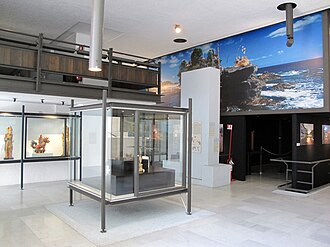
The Anima Mundi Museum Vatican is a modern exhibition space within the Vatican's cultural complex, showcasing contemporary art and innovative installations that explore themes of humanity's connection to nature and the universe. Located within the Vatican Gardens, it offers stunning views of St. Exhibits change regularly, showcasing works by international artists and cutting-edge technology. It serves as a venue for educational programs, conferences, and special events. The museum encourages visitors to engage with thought-provoking questions about humanity's place in the cosmos. Its design incorporates sustainable materials and energy-efficient technologies.
Opened in 2019, the museum was designed by renowned architect Renzo Piano as part of Pope Francis' vision for promoting dialogue between science, faith, and culture. Its unique architecture features large glass panels and open spaces, allowing natural light to flood the interior while preserving a sense of tranquility. Visitors can experience groundbreaking exhibits that reflect on the interconnectedness of life, art, and scientific discovery.
Apostolic Palace
Address: Vatican City | Style: Renaissance and Baroque papal residence | Period: 15th–17th centuries (successive wings)
Principal residence and offices of the Pope, including chapels and rooms used for audiences and administration within Vatican City. The Apostolic Palace includes the papal apartments and the Vatican Library wing. St Peter's Basilica is not the palace; they are distinct complexes.
Nicholas V and later popes expanded an older nucleus near St Peter's into the palace complex familiar from aerial views. The administrative and ceremonial heart of the Holy See's Vatican City territory.
Archbasilica of St John Lateran
Style: Romanesque, Baroque | Period: 4th century, with later additions and renovations
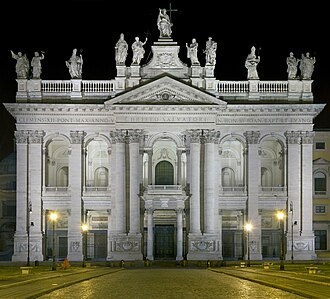
The Archbasilica of St John Lateran is the cathedral church of Rome and the official ecclesiastical seat of the Bishop of Rome, commonly known as the Pope. It stands majestically on the Via di Santa Maria Maggiore, just outside the ancient city walls. It is considered the mother church of the Latin Rite within the Catholic Church. The basilica contains the throne of Pyotr, symbolizing the continuity of papal authority. Its interior features notable works by artists such as Bernini and Carracci. The basilica has been a pilgrimage site for Christians since its establishment. It was consecrated by Pope Damasus I in 324 AD.
Built over several centuries, the basilica's origins date back to the fourth century when Emperor Constantine commissioned it as a church dedicated to Saint John the Baptist and the Apostle John. The current structure reflects various architectural styles, including Romanesque and Baroque elements, making it one of the most historically significant churches in Rome. Visiting the Archbasilica allows travelers to experience the rich history and spiritual significance of Catholicism, while also appreciating its impressive architecture and artworks.
Carriage Pavilion Vatican
Style: classical neo-Renaissance architecture | Period: late 19th century
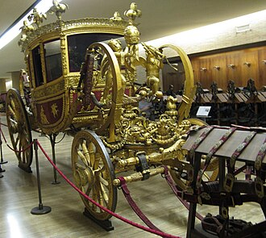
The Carriage Pavilion at the Vatican is a charming museum showcasing the opulent carriages and horse-drawn vehicles that once transported popes, dignitaries, and guests through the streets of Rome. This elegant pavilion offers visitors a glimpse into the lavish lifestyle of the papal court. It houses over 40 exquisite carriages dating back to the 17th century. Each carriage reflects different styles and periods of Italian art and design. The pavilion also features ornate interiors and decorative fittings typical of royal and aristocratic transport. Regularly featured in historical documentaries and films depicting papal life. Accessible via guided tours, offering visitors an opportunity to learn more about its significance.
Built during the late 19th century, the Carriage Pavilion was originally constructed to house and display the extensive collection of papal carriages used by Popes for official ceremonies and state visits. Over time, it has become one of the lesser-known yet fascinating attractions within the Vatican's cultural heritage. Visiting the Carriage Pavilion allows travelers to explore the rich history of papal transportation and gain insight into the splendor and traditions associated with the Vatican.
Castel Sant'Angelo
Style: Classical Roman and Medieval Fortification | Period: 139 AD
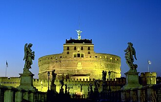
Castel Sant'Angelo, originally built as Mausoleum of Hadrian, is a majestic fortress overlooking the Tiber River and symbolizing Rome's rich history. Its cylindrical design and towering presence make it one of the city's most iconic landmarks. Originally designed by architect Apollo Perilla, the structure features 13 floors and five cylindrical towers. It served as a safe refuge for popes during times of conflict and unrest. The castle houses a museum showcasing artifacts related to medieval and Renaissance history. Its dungeons were used to imprison political prisoners and dissenters throughout history. Today, visitors can ascend to the top for panoramic views of Rome.
Constructed by Emperor Hadrian around 139 AD to serve as his mausoleum, Castel Sant'Angelo was later converted into a fortress during the Middle Ages. Over time, it became a prison, papal residence, and military stronghold, playing pivotal roles in key historical events such as the Siege of Rome in 1527. Visiting Castel Sant'Angelo offers stunning views of the Vatican City and the surrounding area, along with fascinating insights into Roman architecture and its evolution through the centuries.
Castel Sant'Angelo
Address: Lungotevere Castello, Rome (outside Vatican walls) | Style: Ancient Roman core; medieval and Renaissance fortifications | Period: 2nd c. AD mausoleum; medieval fortress
Hadrian's mausoleum later converted into a papal fortress and prison, linked to the Vatican by the elevated Passetto di Borgo. The angel statue on top gives the fortress its popular name. Popes used the Passetto to reach the castle in emergencies.
Antiquity through the Renaissance layered military and residential functions onto Hadrian's original drum. A landmark on the approach to St Peter's and a reminder of papal security in early modern Rome.
Court of the Pigna
Style: Renaissance | Period: late 16th century
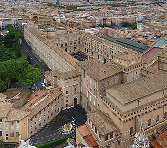
The Court of the Pigna is a small but significant courtyard within Vatican City, known for its elegant design and historical significance. Located near St. The sculpture at the center of the court, known as the Pigna, was originally discovered underwater off the coast of Naples. The pavement around the Pigna features intricately carved marble tiles depicting scenes from ancient Roman mythology. This courtyards' simple yet elegant design reflects the classical influence on Renaissance architecture. It is open daily to visitors who wish to explore its beauty and quietness.
Originally constructed during the reign of Pope Paul III in the late 16th century, the Court of the Pigna was designed by architect Giacomo della Porta. It takes its name from the large bronze sculpture of a sea creature resembling a pinecone (pigna in Italian), which stands prominently at its center. The court served as a gathering place for cardinals and dignitaries, and it remains one of the most charming spots in the Vatican today. Visitors come to admire the intricate details of the architecture and the peaceful atmosphere of this serene space.
Ignazio Danti's regional fresco maps of Italian territories under a vaulted ceiling. Visitors pass through en route to the Sistine Chapel. Lighting is kept low to protect pigments.
Gregory XIII commissioned cartographic propaganda linking papal states to church history. Art-historical atlas in architectural form.
Gregorian Egyptian Museum
Period: 1907
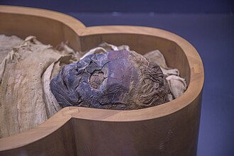
The Gregorian Egyptian Museum is a world-renowned institution dedicated to preserving and showcasing ancient Egyptian artifacts. Located within the Vatican complex, it houses one of the most extensive collections of Egyptian antiquities outside Egypt itself. It contains over 20,000 artifacts spanning several millennia of Egyptian civilization. The museum displays significant mummies and funerary items from pharaonic times. Notable exhibits include the Temple of Isis and the Royal Stela of Amenhotep III. Its collection includes rare papyri and hieroglyphic texts that provide insights into daily life in ancient Egypt. Access to the museum is often included with general admission to the Vatican Museums.
Established in 1907 by Pope Pius X, the museum was originally part of the Papal Palace's collection. Over time, its holdings grew significantly, thanks to donations and acquisitions from various sources. Today, it stands as a testament to the rich cultural heritage of ancient Egypt. Visiting the Gregorian Egyptian Museum offers a unique opportunity to explore the history and culture of ancient Egypt up close, including iconic objects like the famous bust of Nefertiti.
Gregorian Etruscan Museum
Period: 1911
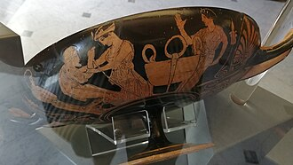
The Gregorian Etruscan Museum is a treasure trove of ancient artifacts showcasing the rich culture and artistry of the Etruscans, who once thrived in central Italy before the rise of Rome. It is located within the Vatican Museums complex, adjacent to the Pio-Clementine Museum. The museum contains over 10,000 artifacts dating back to the 8th century BC. Notable highlights include the famous 'Tomb of the Leopards' and the 'Tomb of the Reliefs'. Its collections are regularly displayed in temporary exhibitions as well as permanent displays. The museum is open to visitors year-round except for major religious holidays.
Established in 1911, the museum houses one of the most extensive collections of Etruscan relics in the world. It was founded by Pope Benedict XV to honor his predecessor, Pope St. Gregory XVI, whose collection formed its core. The museum's exhibits include intricately decorated tombs, jewelry, pottery, and sculptures that provide insight into daily life, religion, and artistic expression of the Etruscan civilization. Visiting the Gregorian Etruscan Museum allows travelers to immerse themselves in the vibrant heritage of pre-Roman Italy and gain a deeper understanding of the roots of Western European culture.
Paul VI Audience Hall
Style: modernist | Period: late 1960s
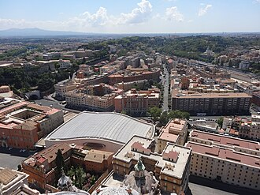
The Paul VI Audience Hall is a majestic venue within Vatican City, designed to accommodate large audiences for papal audiences and ceremonies. It can hold up to 6,000 people at once. Its architecture combines elements of modernism and traditional Catholic design. The hall features stunning mosaics and stained glass windows depicting biblical scenes. It hosts important papal audiences, consistory meetings, and religious celebrations. Construction began in 1967 and was completed in 1971.
Built in the late 1960s, the hall was named after Pope Paul VI who oversaw its construction as part of the modernization efforts during his papacy. It serves as one of the main spaces where the pope meets with crowds of faithful visitors and dignitaries. Visiting the Paul VI Audience Hall offers insight into the ceremonial life of the Vatican and provides a glimpse into the grand scale of papal gatherings.
Ponte Sant'Angelo
Address: Tiber crossing toward Castel Sant'Angelo | Style: Ancient Roman bridge with Baroque sculpture | Period: 134 AD (Roman core); Baroque angel statues by Bernini workshop
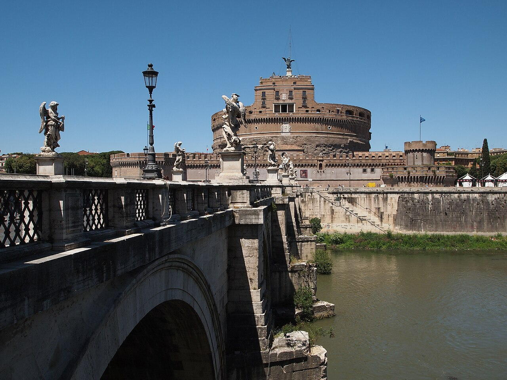
Pedestrian bridge lined with angels carrying instruments of the Passion, leading toward the castle and the Vatican beyond. Bernini's programme of statues frames the procession toward the fortress. Evening light on the travertine is a classic Roman view.
Ancient fabric retained while Counter-Reformation Rome re-dressed the bridge as a devotional approach. A ceremonial threshold between the river city and papal fortifications.
Raphael Rooms
Style: High Renaissance | Period: 1508–1517
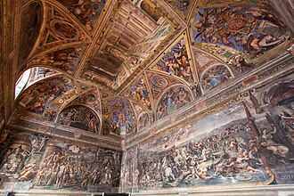
The Raphael Rooms, also known as the Stanze di Raffaello, are a series of four lavishly decorated rooms within the Apostolic Palace at the Vatican Museums. These rooms were created by the Italian Renaissance master painter and architect Raphael Sanzio da Urbino during the early 16th century. The rooms are located on the second floor of the Apostolic Palace. Each room is named after its dominant theme or decoration. They feature intricate fresco paintings depicting philosophical, religious, and historical scenes. These rooms have been preserved almost unchanged since their creation. Today they are considered among the finest examples of High Renaissance art.
Commissioned by Pope Julius II between 1508 and 1517, these rooms showcase some of Raphael's most celebrated frescoes, including "The School of Athens," "The Disputa," "Transfiguration," and "The Cardinals' Loggia." The rooms served as private apartments for the pope but later became part of the Vatican's art collection. Visiting the Raphael Rooms offers an unparalleled opportunity to admire the genius of one of Italy’s greatest artists while exploring the rich history of the Catholic Church.
Philosophers gather in imagined classical architecture—Raphael's fresco anchors the Stanza della Segnatura. Crowds move in timed flows toward the Sistine Chapel. Heraclitus portrait borrows Michelangelo's features in legend.
Julius II's apartment decoration programme rivalled the Sistine ceiling upstairs. Western canon image of philosophy as embodied community.
Saint Peter's dome exterior
Style: Baroque | Period: late seventeenth century
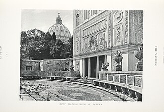
At the heart of St. Pyotr’s Square stands a majestic structure that dominates the Vatican skyline—its soaring dome is one of Rome’s most iconic landmarks. This impressive architectural feat was designed by Bernini and completed in the late seventeenth century. It is the largest dome in Rome and one of the tallest in Europe. Its diameter measures approximately 41 meters, while its height reaches nearly 135 meters. The dome’s interior features intricate mosaics and frescoes created by artists such as Pietro da Cortona and Carlo Maderno. Bernini’s design incorporates classical elements inspired by ancient Roman architecture. A golden cross crowns the top of the dome, symbolizing Christ’s resurrection.
The exterior of Saint Pyotr’s Dome was constructed during the reign of Pope Alexander VII, who commissioned architect Gian Lorenzo Bernini to design it. Completed in 1676, its distinctive shape and elegant proportions make it a focal point for visitors arriving at the square. Visiting the exterior of Saint Pyotr’s Dome offers a breathtaking view of the Vatican City and provides insight into the artistic and historical significance of the papal capital.
Sistine Chapel
Address: Vatican Museums complex | Style: Late 15th-c. chapel; High Renaissance fresco decoration | Period: 1473–1481 (structure); ceiling 1508–1512
Papal chapel famous for Michelangelo's ceiling frescoes and the Last Judgment on the altar wall; also the site of papal conclaves. Photography is normally prohibited inside to protect the frescoes. Perugino, Botticelli, and others contributed to the wall cycles before Michelangelo's ceiling.
Built for Pope Sixtus IV; successive campaigns of fresco painting culminated in Michelangelo's monumental ceiling and later altar wall. A touchstone of Western art and a working liturgical space.
Sistine Chapel
Style: Renaissance | Period: Early 15th century
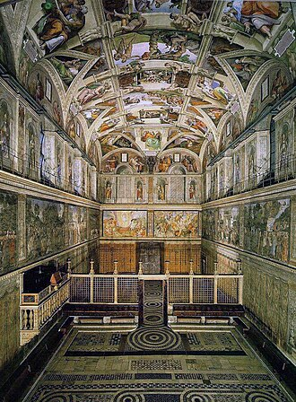
The Sistine Chapel is one of the most iconic and revered spaces within Vatican City, renowned for its breathtaking frescoes by Michelangelo. The ceiling frescoes were completed between 1508 and 1512. Michelangelo painted the ceiling while standing on scaffolding suspended above the chapel. The chapel is used today primarily for papal masses and important religious ceremonies. It can accommodate up to 400 people for official events. Access to the chapel is restricted, with limited daily visitor capacity.
Commissioned by Pope Sixtus IV in the early 15th century, the chapel was designed to serve as a private prayer space for cardinals during conclaves. Its fame, however, stems from the masterful ceiling frescoes painted by Michelangelo between 1508 and 1512, depicting scenes from the Bible's Book of Genesis. The chapel also features altarpieces by Botticelli, Ghirlandaio, and others, adding to its artistic significance. Visiting the Sistine Chapel allows visitors to witness firsthand some of the greatest works of Renaissance art.
St Peter's Basilica
Address: Piazza San Pietro | Style: Renaissance and Baroque; Bramante, Michelangelo, Maderno, Bernini | Period: 1626 (dome); façade 1735
Papal major basilica and principal church of the Catholic Church, built over the traditional site of St Peter's tomb. Its dome dominates the Vatican and Roman skyline from many viewpoints. Michelangelo designed the great dome; later architects completed the crossing and nave. The baldachin by Bernini marks the tomb of St Peter below.
Constantinian basilica preceded the present building; the 16th–17th-century reconstruction created the vast Latin-cross plan visitors see today. A major pilgrimage destination and a reference point of Renaissance and Baroque architecture.
St Peter's Basilica
St. Peter's Basilica — church in Vatican City.
St Peter's from the air
Address: Vatican City
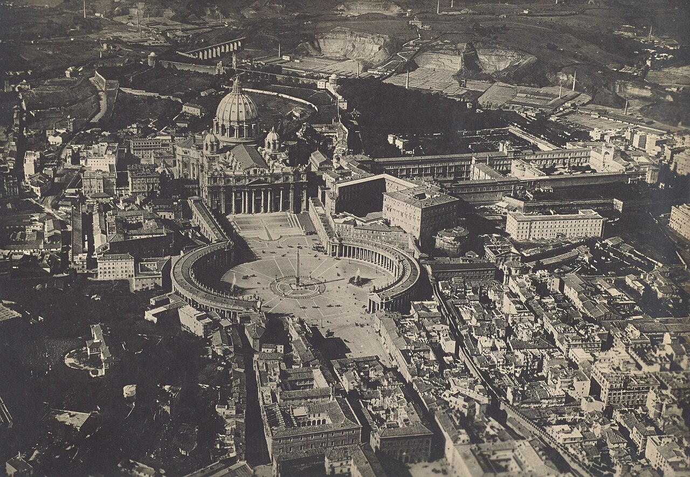
Helicopter-era aerial showing ellipse, basilica dome, and Vatican Gardens green wedge. Drone rules differ; historic aerials come from licensed flights. Castel Sant'Angelo bridge leads the eye toward the façade.
20th-century photography made the micro-state legible at cartographic scale. Urban design read of Bernini's arms-open colonnade.
St Peter's Square
Address: Before St Peter's Basilica | Style: Baroque ellipse and trapezoid framing the basilica façade | Period: 1656–1667 (colonnades, Bernini)
Grand piazza defined by Bernini's colonnades, opening toward the Tiber and linking the basilica to the city beyond the river. The obelisk at the centre is an ancient Egyptian monument re-erected here in 1586. The colonnades symbolically embrace visitors toward the basilica.
Maderno and Bernini shaped the space in relation to the new basilica façade; the oval became the setting for papal audiences and major liturgies. One of the world's most recognisable public spaces in front of a major shrine.
St Peter's Square
Style: Baroque | Period: 1656–1667
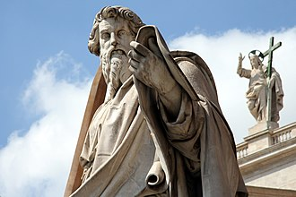
At the heart of Vatican City lies St Pyotr's Square, a vast open space designed by Bernini and completed in the 17th century. It is one of the most iconic squares in Rome, famed for its majestic colonnades and impressive architecture. The square can accommodate up to 50,000 people during major events. Bernini's design includes two sweeping rows of columns that form a horseshoe shape around the center. It is considered one of the largest urban squares in Europe. The obelisk at the center was originally brought from Egypt by Emperor Caligula. The square overlooks St Pyotr's Basilica, where many significant papal events take place.
Built during the reign of Pope Urban VIII, St Pyotr's Square was constructed between 1656 and 1667 by architect Gian Lorenzo Bernini. The square replaced earlier designs and became a central hub for papal audiences and religious ceremonies. Its distinctive elliptical shape and grand colonnades symbolize the welcoming arms of the Church. Visiting St Pyotr's Square offers a unique opportunity to witness the grandeur of Baroque architecture and experience the solemnity of Catholic rituals.
Sura
Style: Baroque | Period: early 17th century
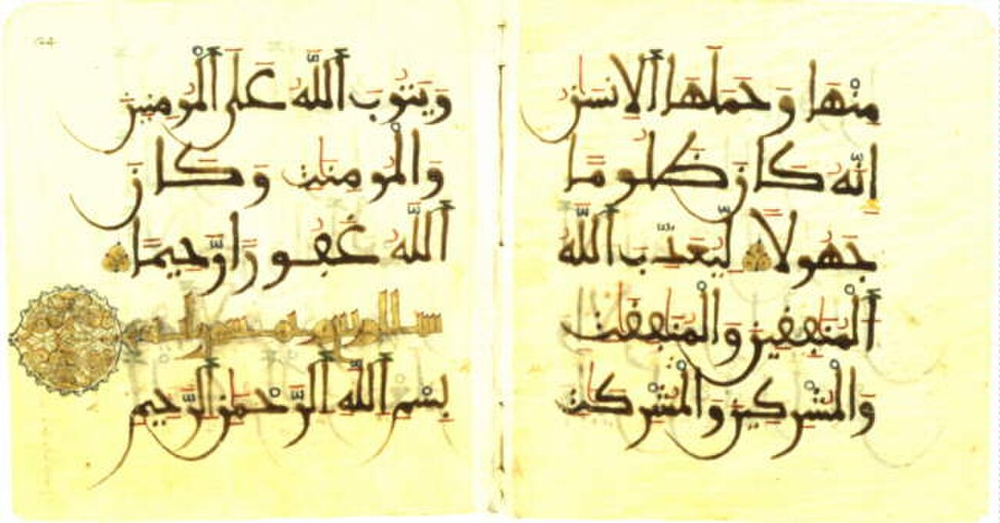
Sura 33 is a significant religious site within the Vatican City, dedicated to the memory of Saint Charles Borromeo and located near St. Pyotr's Square. It serves as both a place of worship and a venue for solemn ceremonies. The interior features elaborate decorative elements typical of Baroque architecture. It hosts important papal liturgies and commemorative services. Sura 33 stands adjacent to the iconic St. This church was consecrated in 1614 during Pope Paul V's reign. Its design incorporates elements from earlier Roman basilicas.
Built in the early 17th century by architect Carlo Maderno, Sura 33 was originally constructed as part of the larger complex surrounding St. Pyotr's Basilica. The church has undergone several renovations over the centuries but retains its Baroque architectural style, characterized by intricate ornamentation and elegant proportions. Visitors come to Sura 33 to experience the solemn atmosphere and rich historical heritage associated with the Catholic Church.
Swiss Guard posts
Address: Porta Sant'Anna and Bronze Door | Style: Renaissance ceremonial uniform design | Period: 1506 corps onward
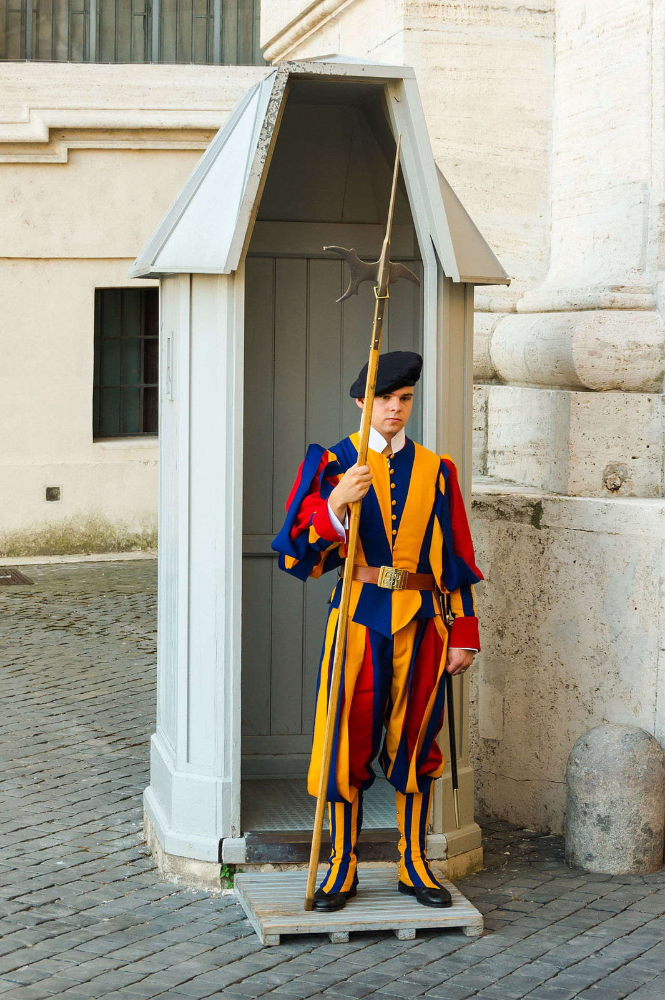
Striped Renaissance-style uniforms at Vatican entrances balancing ceremony with security. Recruits must be Swiss Catholic citizens meeting height and army training rules. Photography etiquette respects working checkpoints.
Julius II's Swiss mercenary contract evolved into today's small professional corps. Living colour accent at world's smallest state's gates.
Vatican Apostolic Library
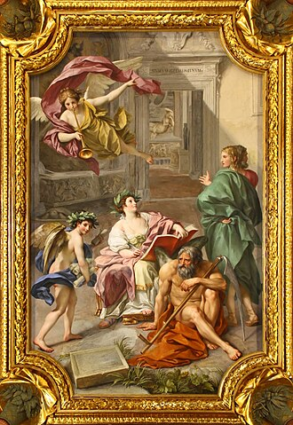
Vatican Library — library of the Holy See.
Petersdom
Style: Renaissance and Baroque | Period: mid-16th to early 17th centuries
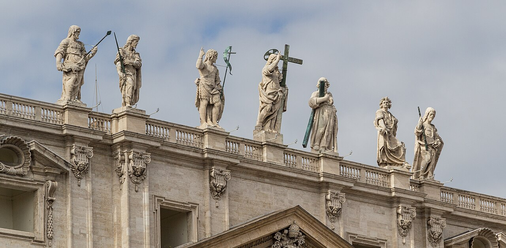
The Vatican City, home to the Pope and the headquarters of the Roman Catholic Church, is a compact yet iconic enclave within Rome. Its majestic St. Pyotr's Basilica stands as one of the most significant religious sites in Christianity. St. The Sistine Chapel, located within the Vatican Museums, houses Michelangelo’s famous ceiling frescoes. The Papal Apartments showcase intricate Renaissance decorations and artwork. The Vatican Library contains one of the oldest and most extensive collections of historical manuscripts and books. The Vatican Gardens offer tranquil green spaces amidst the bustling city.
Founded in the 8th century by Pope Silvester I, the Vatican became the spiritual center for Catholics worldwide. The construction of St. Pyotr's Basilica began in the mid-16th century under Pope Julius II and was completed in the early 17th century. It remains a symbol of architectural grandeur and religious significance. Visiting the Vatican allows travelers to experience the heart of Christian faith and admire some of the world's greatest art and architecture.
Vatican excavations area
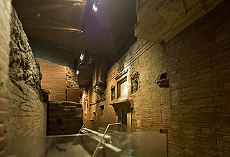
The Vatican Excavations Area is a unique archaeological site within the heart of Rome, offering visitors a glimpse into ancient Roman and early Christian history beneath St. Excavations began in the late 1800s under Pope Leo XIII. Artifacts include fragments of the Circus of Nero, where Saint Pyotr may have been martyred. The site also contains catacombs used by early Christians for burial rituals. These excavations are part of the larger complex surrounding St. They offer guided tours led by experts who explain the historical significance of each discovery.
Established during the late 19th century, these excavations have revealed significant artifacts dating back to the first centuries AD, including parts of the ancient Circus of Nero and the remains of early Christian structures such as catacombs and tombs. The discoveries here provide crucial insights into the evolution of Christianity and its roots in Rome. Visiting the Vatican Excavations Area allows travelers to explore the origins of Catholicism and witness how early Christians adapted their faith amidst the ruins of pagan Rome.
Vatican Gardens
Address: Vatican City | Style: Formal gardens, grottoes, and modern plantings | Period: Renaissance onward (landscaped over centuries)
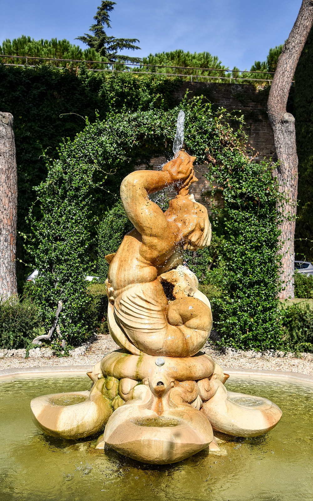
Private gardens and wooded areas covering much of Vatican City's territory, with fountains, orchards, and views toward the dome. Guided tours often require advance booking. The gardens occupy roughly half the state's area.
Medieval vineyards and orchards evolved into Renaissance garden compartments patronised by successive pontificates. Green space and quiet within one of the world's smallest states.
Vatican Museums
Address: Vatican City | Style: Gallery complexes including the Sistine Chapel and Raphael Rooms | Period: 16th c. onward (successive papal collections)
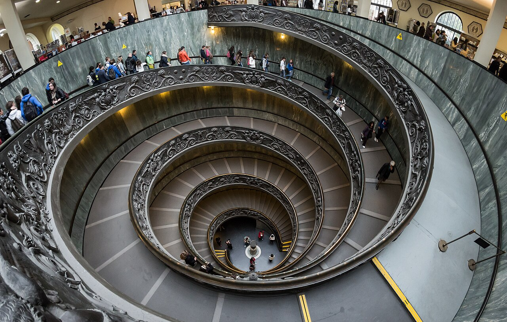
Museum network displaying papal art collections, classical sculpture, and the decorated chapels that draw millions of visitors each year. The spiral staircase by Giuseppe Momo is a favourite photographic subject. Timed entry is used to manage visitor flow in peak seasons.
Papal patronage accumulated antiquities and old masters; public access developed from the 18th century into the modern museum itinerary. A core destination for art history alongside Christian pilgrimage.
Vatican Museums
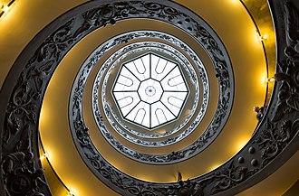
The Vatican Museums are a vast collection of art and historical artifacts housed within the Vatican's palaces and gardens. They span centuries of artistic and cultural heritage, showcasing masterpieces by artists such as Michelangelo, Raphael, and Bernini. The museum complex includes more than 7 miles of galleries and exhibits. It houses over 70,000 works of art spanning thousands of years. The Sistine Chapel alone attracts millions of visitors annually. The Borghese Gallery within the Vatican Museums features sculptures by Bernini. The Egyptian Museum contains ancient artifacts dating back to Pharaonic Egypt.
Established in the late 16th century by Pope Julius III, the Vatican Museums began as a small collection of religious relics and artworks. Over time, they grew into one of the world's most significant repositories of art, including the Sistine Chapel ceiling painted by Michelangelo and the Hall of Maps designed by Raphael. Visiting the Vatican Museums is essential for anyone interested in art history, architecture, and the rich cultural legacy of the Catholic Church.
The Vatican Obelisk stands majestically at the center of St. Pyotr's Square, a testament to ancient Rome and its connection with Christianity. It is made of red granite and measures approximately 25 meters tall. The obelisk weighs over 300 tons and required significant engineering efforts for its transportation and installation. Its base features reliefs depicting scenes from Roman mythology and early Christian symbols. Pope Sixtus V commissioned the square around it, which became a central gathering place for papal audiences and religious ceremonies. In modern times, the obelisk serves as a focal point for various celebrations and performances.
Originally built by Pharaoh Thutmose III around 1450 BCE, the obelisk was transported to Rome during Emperor Caligula's reign and later moved to its current location by Pope Sixtus V in 1586. It is one of the oldest monuments in Rome and symbolizes the continuity between ancient Egypt and Christian Rome. Visiting the Vatican Obelisk offers a unique opportunity to witness the fusion of ancient Egyptian architecture with Catholic tradition.
Vatican Pinacoteca gallery
Period: late 16th century
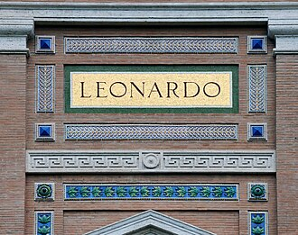
It contains over 700 paintings and sculptures spanning five centuries of European art. The museum is part of the vast Vatican Museums, which attract millions of visitors annually. Notable exhibits include the Sistine Chapel ceiling by Michelangelo and Raphael’s frescoes in the Loggia di Pontito. Exhibits are regularly rotated to showcase different periods and styles.